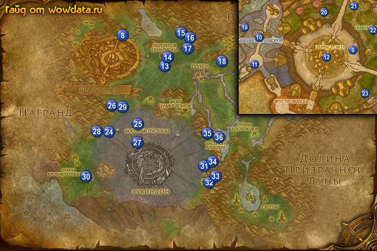

1) Так как вы шли на юг вы увидите Шаттрат, войдите в него 8 (33, 14) и начните <А'дал> сразу на мосту при входе.
2) Пройдите в город и слева откройте пункт полета 9 (64, 41).
3) Войдите в центр города и вы увидите А'дал в центре. И так закончите <А'дал>, затем рядом начните <Город Света> у Кадгар . Когда он сумонит Слуга Кадгара, вы должны будете следовать за ним, по дороге начните 2 квеста <Без рыбалки> и <Глаза Скеттиса>,. Когда вы закончите ходить за сумоном и квест выполнится то закончите его у Кадгар .
4) Теперь вам нужно решить с кем вы будете качать репутацию, со скаерсами или алдорам. Знайте что многие альянсеры качают репутацию с алдорами а ордынцы со скаерсами. Исходя из этих соображений данный гайд будет основан на алдорских квестах, учитите что скаерсы и алдоры враждуют между собой. Если вы хотите качать репутацию со скаерсами то это лично ваш выбор.
5) Начните <Присяга Альдору> и получите репутацию дружелюбную. Теперь начните <Ишана>.
6) Идите наверх в Возвышенность Алдоров 10 (30, 34) поговорите с Адуин Страж Света и начните у него <Знаки Кил-Джедена>.
7) Поднимитесь дальше и закончите <Ишана>, начните <Возрождение Света>.
8) Идите на юг в гостинице 11 (28, 49) и сделайте ее своим домом.
9) Теперь в Терраса Света 12, вы можете найти порталы в Дарнасс, Штормград или Стальгорн (ну еще в Экзодар есть). Используйте их чтобы слетать в одну из столиц и выучить скиллы а затем вернуться по руне.
10) Покинте город через северо-восточный выход и вы увидите Озеро Силмир, идите к нему и бейте Блестящий угорь для <Без рыбалки>.
11) Когда закончите выйдите из озера на востоке и идите на юг к Перелесок Ценариона, там таурен и кодо, закончите <Что случилось в Перелеске Ценариона?> 13 (44, 26), начните <Странная энергия> и <Ответы в чащобе>. Бейте обычных Пухоспинка здась и Агрессивная пухоспинка наверху в домике. Игнорируйте квест который дают в доме он элитный.
12) В заброшеной гостинице населенной бабочками людоедами делайте <Ответы в чащобе> 14 (45, 22).
13) Идите обратно к таурену и закончите <Странная энергия> и <Ответы в чащобе>, начните <Любыми средствами>, теперь посмотрите на карту, вы видите дорогу между городом и квест гивером, вот на ней вы найдете Эмпур , закончите <Любыми средствами>, начните <Лайтрай торговец Ветром>.
14) У вас сейчас должно быть примерно 50% на 64 лвл.
15) Идите наверх к 15 (48, 14) там Западный Алтарь для <Возрождение Света>, идите к Северный алтарь 16 (50, 16). Рядом с этим алтарем идите наверх на деревья за вашим первым глазом Око Вейль Рескк, он на верху дерева-башни 17 (50, 19) для <Глаза Скеттиса>.
Идите к Восточный алтарь 17 (49, 20). Теперь идите на восток Гнездовье Шиенор за следующим глазом Око Вейль Шиенор, который тоже на верху дерева 18 (59, 25).
16) Пока вы делали эти 2 квесты, вы должны били собрать несколько [Перо араккоа], сохраните их на будущее для получения репутации.
17) Вернитесь по руне в Шаттрат и идиде в главное здание к Ишана 19 (24, 29) и закончите <Возрождение Света>.
18) Идите в низ в Нижний Город 20 (53, 21) к Рилак Освобожденный закончите <Глаза Скеттиса>, начните <Поиски Киррика>. теперь идите к Сет 21 (64, 17) и закончите <Без рыбалки>, игнорируйте <Лекарство для Залии>.
19) Идите на югo-восток 22 (71, 31) поговорите с Латрай Торговец Ветром и закончите <Лайтрай торговец Ветром>, начните <Личное одолжение>.
20) Идите на юг в туннель 23 (69, 65) и покинте город.
21) Идите на юг 24 (31, 53) в Гробница Тени и бейте кабалистов для <Знаки Кил-Джедена>. Далее для получения репутации их можно будет сдавать по 10 штук.
22) Вы можете найту свиток [Распоряжения заговорщиков], у него маленький шанс дропа но 1 вам точно должен попасться, он начинает <Политические приказы>.
23) Теперь идите на восток к Караван беженцев найдите там Мекеда 25 (37, 50) и закончите <Политические приказы>, начните <Гробница Тени> и <До наступления тьмы>.
24) Теперь поговорите с Киррик Пробужденный и закочните <Поиски Киррика>, начните <Завеса Скит: Темный камень Терокка>.
25) Поговорите с Лакотай, начните у него <Зараженные защитники>, деревья на этот квест ходят тут неподалеку, после смерти дерева из него валятся тараканы, вот они то и нужны на квест.
26) Идите на северо-запад 26 (30, 42) и бейте Скитийский ястреб-воитель Скитийский ветроруб для <Личное одолжение>, затем вы увидите большой черный кристал который называется тёмный камень терокка 26 (30, 41) используйте ваш [Жезл Очищения] на нгео для <Завеса Скит: Темный камень Терокка>.
27) Идите обратно вниз в Гробница Тени 24 (31, 53), идите внутрь, в первой комнате поверните на лево, полутайте сундук и получите [Молот К'алена] для <Гробница Тени>, в двух других комнатах из сундуков соберите [Пелерина Арунена] и [Свиток Аталора].
28) Когда будите уходить поговорите с Акуно, и проигнорируйте <Побег из гробницы> если у вас нету группы так как выполнить будет проблемотично (я лично варлоком-демонологом справился и 1, хантеры-BM тоже должны справится, остальным классам лучше с группой).
29) Когда вы закончите сдесь идите на югo-восток 27 (37, 57), бейте кабалистов тут для <До наступления тьмы>, у вас уже должны быть убиты 8 Кабалист-рыскатель .
30) Идите назад в Caravan и поговорите Лакотай, закончите у него <Зараженные защитники>, затем закончите <Завеса Скит: Темный камень Терокка> у Киррик Пробужденный, начните <Завеса Рейз: неживое зло>.
31) Начните <Пропавшие друзья> у ребенка, затем поговорите с Мекеда, закончите у него <Гробница Тени> и <До наступления тьмы>.
32) Идите на запад 28 (26, 53) и бейте нежить для <Завеса Рейз: неживое зло>.
33) Идите на север 29 (33, 42) и бейте Скитийский ястреб-воитель Скитийский ветроруб ради [Ключ от тюрьмы Завеса Скит], затем освобождайте из клеток детей для <Пропавшие друзья>.
34) Идите назад в caravan, закончите <Завеса Рейз: неживое зло>, начните <Гнездовье Литик: превентивный удар>. Затем закончите <Пропавшие друзья> у ребенка.
35) У вас сейчас 80 – 85% на 64 лвл.
36) На юго-западе 30 (23, 71) начинайте открывать Проклятое яйцо для <Гнездовье Литик: превентивный удар>, из них рандомно будут вылетать здоровые и больные птицы, нужно выпустить 3 здоровых и убить 3 больных.
37) Вернитесь обратно в caravan и у Киррик Пробужденный закончите <Гнездовье Литик: превентивный удар> и начните <Гнездовье Шалас: сигнальные огни>. Верховный жрец Орглум тоже дает квесты но сейчас вы даже не можете поговорить с ним.
38) Идите на восток 31 (55, 66) идите по дороге в Гнездовье Шалас и начинайте делать <Гнездовье Шалас: сигнальные огни> : пройдя наверх вы увидите фиолетовый круг с 2 птицами, чуть дальше поднемитесь на дерево 32 (56, 73), на верху срузу потушите огонь , пройдите по мосту на следующее дерево и потушите следующий огонь. Спуститесь в низ, по мостику залезте на следующее дерево 33 (57, 71), перейдите на связанное с ним дерево и там будет ещё один костёр. Идите на подъем на следующее дерево 34 (57, 65), на нижнем ярусе второго дерева вы найдете последний костёр 31 (55, 67).
39) Вернитесь в caravan и у Киррик Пробужденный закончите <Гнездовье Литик: превентивный удар> и начните <Обратно в Шаттрат>.
40) Бегите на восток к Бастион Аллерии 35 (55, 54).
41) Во втором доме слева от входа (гостиница) сделайте её вашим домом.
42) Около дома, почти напротив гостиницы 36 (58, 55) на столбе розыска начните <Награда за убитых костеклювов!>, затем в доме у Роз'алета начните <Семена олембы>, пройдите дальше в глубь дома поговорите с Лейтенант Булыжный Молот, начните у него <Поговорить с рядовым Виксом> и <Уменьшить стаю>.
43) Выйдите из дом и с правой стороны начните <Сдержать араккоа> у Тандер .
44) У большого водяного колеса начните <Беспокойные соседи> и <Хвосты воргов>.
45) Через дорогу, в доме закончите <Судьба Туурема>, наните <Нарушение магического равновесия>.
46) Дальше по дороге (за колесом) откройте пункт полета 36 (59, 55) и летите в Шаттрат.
47) Идите вниз в Нижний Город, закончите <Личное одолжение> 22 (72, 31) и начните <Исследование Туурема>.
48) Идите к Рилак Освобожденный 20 (53, 21) закончите <Обратно в Шаттрат>, затем подойдите к Защитник Грашна рядом с ним и начните <Нападение Скеттиса>, сразу готовтесь к бою, лучше позвать друга чтобы он помог выполнить вам этот квест, главное убить большую птицу. Затем здайте квест Рилак Освобожденный.
49) Не начинайте <Видения Ворен-Таля>, это понизит вашу репутацию с алдорами.
50) Идите наверх в Возвышенность Алдоров 10 (30, 34) и закончите <Знаки Кил-Джедена>, так же сдайте оставшиеся у вас марки за репутацию.
51) Сейчас вы должны быть 64 лвл или почти 64 лвл.
52) Идите в Терраса Света 12 и используйте порталы чтобы попасть к своим тренерам и выучить скиллы, затем используйте руну и вернитесь в Бастион Аллерии.